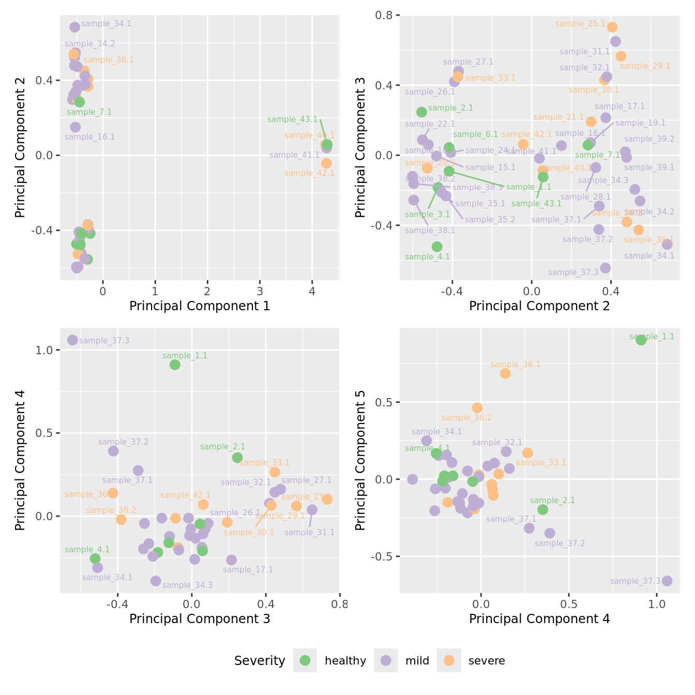
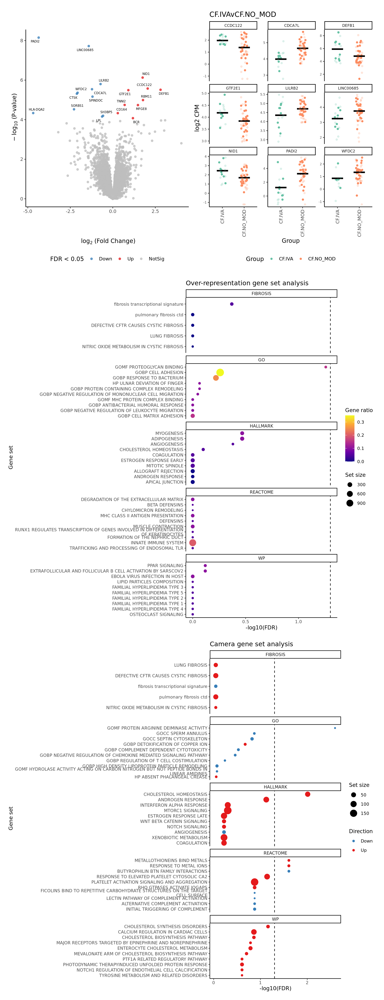

Inflammation of Paediatric Pulmonary Diseases
DGE analysis of CF status in IFI27 macrophages
Jovana Maksimovic
December 05, 2024
Last updated: 2024-12-05
Checks: 7 0
Knit directory: paed-inflammation-CITEseq/
This reproducible R Markdown analysis was created with workflowr (version 1.7.1). The Checks tab describes the reproducibility checks that were applied when the results were created. The Past versions tab lists the development history.
Great! Since the R Markdown file has been committed to the Git repository, you know the exact version of the code that produced these results.
Great job! The global environment was empty. Objects defined in the global environment can affect the analysis in your R Markdown file in unknown ways. For reproduciblity it’s best to always run the code in an empty environment.
The command set.seed(20240216) was run prior to running
the code in the R Markdown file. Setting a seed ensures that any results
that rely on randomness, e.g. subsampling or permutations, are
reproducible.
Great job! Recording the operating system, R version, and package versions is critical for reproducibility.
Nice! There were no cached chunks for this analysis, so you can be confident that you successfully produced the results during this run.
Great job! Using relative paths to the files within your workflowr project makes it easier to run your code on other machines.
Great! You are using Git for version control. Tracking code development and connecting the code version to the results is critical for reproducibility.
The results in this page were generated with repository version 58c73b1. See the Past versions tab to see a history of the changes made to the R Markdown and HTML files.
Note that you need to be careful to ensure that all relevant files for
the analysis have been committed to Git prior to generating the results
(you can use wflow_publish or
wflow_git_commit). workflowr only checks the R Markdown
file, but you know if there are other scripts or data files that it
depends on. Below is the status of the Git repository when the results
were generated:
Ignored files:
Ignored: .Rhistory
Ignored: .Rproj.user/
Ignored: analysis/obsolete/
Ignored: data/C133_Neeland_batch1/
Ignored: data/C133_Neeland_merged/
Ignored: output/dge_analysis/obsolete/
Ignored: renv/library/
Ignored: renv/staging/
Untracked files:
Untracked: analysis/13.0_DGE_analysis_macrophages_CF-only-samples.Rmd
Untracked: analysis/13.0_DGE_analysis_macrophages_CF-vs-control-samples.Rmd
Untracked: analysis/13.5_DGE_analysis_macro-lipid.Rmd
Untracked: analysis/13.6_DGE_analysis_macro-monocyte-derived.Rmd
Untracked: analysis/13.7_DGE_analysis_macro-proliferating.Rmd
Untracked: analysis/17.0_Figure_3.Rmd
Untracked: code/background_job.R
Untracked: code/reverse_modifier_severity_comparisons.sh
Untracked: data/Proteins_T-NK_07.10.24.csv
Untracked: data/Proteins_macs_07.10.24.csv
Untracked: data/cluster_annotations/marker_genes_TNK_figure_2.xlsx
Untracked: data/cluster_annotations/marker_genes_macrophages_figure_2.xlsx
Untracked: data/cluster_annotations/marker_genes_other_figure_2.xlsx
Untracked: data/cluster_annotations/marker_proteins_TNK_supp.xlsx
Untracked: data/cluster_annotations/marker_proteins_macrophages_supp.xlsx
Untracked: data/cluster_annotations/marker_proteins_other_supp.xlsx
Untracked: data/intermediate_objects/
Untracked: data/main_marker_genes.xlsx
Untracked: data/main_proteins.xlsx
Untracked: data/marker_genes_fig_2.xlsx
Unstaged changes:
Modified: .gitignore
Modified: analysis/09.0_integrate_cluster_macro_cells.Rmd
Modified: analysis/14.0_proportions_analysis_ann_level_1.Rmd
Modified: analysis/15.0_Figure_1.Rmd
Modified: analysis/16.0_Figure_2.Rmd
Modified: code/utility.R
Note that any generated files, e.g. HTML, png, CSS, etc., are not included in this status report because it is ok for generated content to have uncommitted changes.
These are the previous versions of the repository in which changes were
made to the R Markdown
(analysis/13.4_DGE_analysis_macro-IFI27.Rmd) and HTML
(docs/13.4_DGE_analysis_macro-IFI27.html) files. If you’ve
configured a remote Git repository (see ?wflow_git_remote),
click on the hyperlinks in the table below to view the files as they
were in that past version.
| File | Version | Author | Date | Message |
|---|---|---|---|---|
| Rmd | 58c73b1 | Jovana Maksimovic | 2024-12-05 | wflow_publish("analysis/13.4_DGE_analysis_macro-IFI27.Rmd") |
| html | 7b6cc91 | Jovana Maksimovic | 2024-12-05 | Build site. |
| Rmd | cb94dfa | Jovana Maksimovic | 2024-12-05 | wflow_publish("analysis/13.4_DGE_analysis_macro-IFI27.Rmd") |
Load libraries
suppressPackageStartupMessages({
library(BiocStyle)
library(tidyverse)
library(here)
library(glue)
library(Seurat)
library(patchwork)
library(paletteer)
library(limma)
library(edgeR)
library(RUVSeq)
library(scMerge)
library(SingleCellExperiment)
library(scater)
library(tidyHeatmap)
library(org.Hs.eg.db)
library(TxDb.Hsapiens.UCSC.hg38.knownGene)
library(missMethyl)
library(ComplexHeatmap)
})
source(here("code/utility.R"))Load Data
ambient <- ""
file <- here("data",
"C133_Neeland_merged",
glue("C133_Neeland_full_clean{ambient}_macrophages_annotated_diet.SEU.rds"))
seu <- readRDS(file)
seuAn object of class Seurat
21568 features across 165209 samples within 1 assay
Active assay: RNA (21568 features, 0 variable features)Prepare data
Create pseudobulk samples
Use cell type and sample as our two factors; each column of the output corresponds to one unique combination of these two factors.
# select the cell type for pseudobulks
cell <- "macro-IFI27"
out <- here("data",
"C133_Neeland_merged",
glue("C133_Neeland_full_clean{ambient}_{cell}_pseudobulk.rds"))
sce <- SingleCellExperiment(list(counts = seu[["RNA"]]@counts),
colData = seu@meta.data)
sce <- sce[, sce$ann_level_2 %in% cell]
if(!file.exists(out)){
pseudoBulk <- aggregateAcrossCells(sce,
id = colData(sce)[, "sample.id"])
saveRDS(pseudoBulk, file = out)
} else {
pseudoBulk <- readRDS(file = out)
}
pseudoBulkclass: SingleCellExperiment
dim: 21568 44
metadata(0):
assays(1): counts
rownames(21568): A1BG A1BG-AS1 ... ZNRD2 ZRANB2-AS2
rowData names(0):
colnames(44): sample_1.1 sample_15.1 ... sample_6.1 sample_7.1
colData names(71): nCount_RNA nFeature_RNA ... ids ncells
reducedDimNames(0):
mainExpName: NULL
altExpNames(0):Code micro information
Create a factor that identifies individuals that were infected with the top 4 clinically important pathogens at time of sample collection i.e. Pseudomonas aeruginosa, Staphylococcus aureus, Haemophilus influenzae, and Aspergillus.
important_micro <- c("Pseudomonas aeruginosa", "Staphylococcus aureus",
"Haemophilus influenzae", "Aspergillus", "S. aureus",
"Staph Aureus (Methicillin Resistant)", "MRSA")
pseudoBulk$Micro_code <- sapply(strsplit(pseudoBulk$Bacteria_type, ","), function(bacteria){
any(tolower(str_trim(bacteria)) %in% tolower(important_micro))
})
table(pseudoBulk$Micro_code)
FALSE TRUE
26 18 Filter samples
Make a DGElist object from pseudobulk data.
yPB <- DGEList(counts = counts(pseudoBulk),
samples = colData(pseudoBulk) %>% data.frame)
dim(yPB)[1] 21568 44Remove genes with zero counts in all samples.
keep <- rowSums(yPB$counts) > 0
yFlt <- yPB[keep, ]
dim(yFlt)[1] 21332 44Identify any samples that have too few cells for downstream statistical analysis. Examine number of cells per sample. Identify outliers and cross-reference with MDS plot. Determine a threshold for minimum number of cells per sample.
yFlt$samples %>%
data.frame %>%
arrange(Group) %>%
ggplot(aes(x = fct_inorder(sample.id),
y = ncells, fill = Group)) +
geom_col() +
scale_fill_brewer(palette = "Set2") +
scale_y_log10() +
labs(x = "Sample",
y = "Log10 No. cells") +
theme(axis.text.x = element_text(angle = 90, hjust = 1, vjust = 0.5,
size = 8),
legend.position = "bottom") +
geom_hline(yintercept = 500, linetype = "dashed") +
geom_hline(yintercept = 100, linetype = "dotted") +
geom_hline(yintercept = 50, linetype = "dashed") +
geom_hline(yintercept = 25, linetype = "dotted")
| Version | Author | Date |
|---|---|---|
| 7b6cc91 | Jovana Maksimovic | 2024-12-05 |
Examine MDS plot for outlier samples.
mds_by_factor <- function(data, factor, lab){
dims <- list(c(1,2), c(2:3), c(3,4), c(4,5))
p <- vector("list", length(dims))
for(i in 1:length(dims)){
mds <- limma::plotMDS(edgeR::cpm(data,
log = TRUE),
gene.selection = "common",
plot = FALSE, dim.plot = dims[[i]])
data.frame(x = mds$x,
y = mds$y,
sample = rownames(mds$distance.matrix.squared)) %>%
left_join(rownames_to_column(data$samples, var = "sample")) -> dat
p[[i]] <- ggplot(dat, aes(x = x, y = y,
colour = eval(parse(text=(factor))))) +
geom_point(size = 3) +
ggrepel::geom_text_repel(aes(label = sample.id),
size = 2) +
labs(x = glue("Principal Component {dims[[i]][1]}"),
y = glue("Principal Component {dims[[i]][2]}"),
colour = lab) +
theme(legend.direction = "horizontal",
legend.text = element_text(size = 8),
legend.title = element_text(size = 9),
axis.text = element_text(size = 8),
axis.title = element_text(size = 9)) -> p[[i]]
}
wrap_plots(p, ncol = 2) +
plot_layout(guides = "collect") &
theme(legend.position = "bottom")
}
mds_by_factor(yFlt, "as.factor(Batch)", "Batch") & scale_color_brewer(palette = "Set1")
| Version | Author | Date |
|---|---|---|
| 7b6cc91 | Jovana Maksimovic | 2024-12-05 |
mds_by_factor(yFlt, "as.factor(Sex)", "Sex") & scale_color_brewer(palette = "Set2")
| Version | Author | Date |
|---|---|---|
| 7b6cc91 | Jovana Maksimovic | 2024-12-05 |
mds_by_factor(yFlt, "log2(Age)", "Log2 Age") & scale_colour_viridis_c(option = "magma")
| Version | Author | Date |
|---|---|---|
| 7b6cc91 | Jovana Maksimovic | 2024-12-05 |
mds_by_factor(yFlt, "as.factor(Group)", "Group") & scale_color_brewer(palette = "Dark2")
| Version | Author | Date |
|---|---|---|
| 7b6cc91 | Jovana Maksimovic | 2024-12-05 |
mds_by_factor(yFlt, "as.factor(Severity)", "Severity") & scale_color_brewer(palette = "Accent")
| Version | Author | Date |
|---|---|---|
| 7b6cc91 | Jovana Maksimovic | 2024-12-05 |
mds_by_factor(yFlt, "as.factor(Micro_code)", "Infection") & scale_color_brewer(palette = "Pastel1")
| Version | Author | Date |
|---|---|---|
| 7b6cc91 | Jovana Maksimovic | 2024-12-05 |
Filter out samples with less than previously determined minimum number of cells.
minCells <- 50
yFlt <- yFlt[, yFlt$samples$ncells > minCells]
dim(yFlt)[1] 21332 43Re-examine MDS plots.
mds_by_factor(yFlt, "as.factor(Batch)", "Batch") & scale_color_brewer(palette = "Set1")
| Version | Author | Date |
|---|---|---|
| 7b6cc91 | Jovana Maksimovic | 2024-12-05 |
mds_by_factor(yFlt, "as.factor(Sex)", "Sex") & scale_color_brewer(palette = "Set2")
| Version | Author | Date |
|---|---|---|
| 7b6cc91 | Jovana Maksimovic | 2024-12-05 |
mds_by_factor(yFlt, "log2(Age)", "Log2 Age") & scale_colour_viridis_c(option = "magma")
| Version | Author | Date |
|---|---|---|
| 7b6cc91 | Jovana Maksimovic | 2024-12-05 |
mds_by_factor(yFlt, "as.factor(Group)", "Group") & scale_color_brewer(palette = "Dark2")
| Version | Author | Date |
|---|---|---|
| 7b6cc91 | Jovana Maksimovic | 2024-12-05 |
mds_by_factor(yFlt, "as.factor(Severity)", "Severity") & scale_color_brewer(palette = "Accent")
| Version | Author | Date |
|---|---|---|
| 7b6cc91 | Jovana Maksimovic | 2024-12-05 |
mds_by_factor(yFlt, "as.factor(Micro_code)", "Infection") & scale_color_brewer(palette = "Pastel1")
| Version | Author | Date |
|---|---|---|
| 7b6cc91 | Jovana Maksimovic | 2024-12-05 |
Analyse data subsets
CF vs. non-CF controls
Prepare data
Filter genes
Filter out genes with no ENTREZ IDs and very low median expression.
gns <- AnnotationDbi::mapIds(org.Hs.eg.db,
keys = rownames(yFlt),
column = c("ENTREZID"),
keytype = "SYMBOL",
multiVals = "first")
keep <- !is.na(gns)
ySub <- yFlt[keep,]
thresh <- 0
m <- rowMedians(edgeR::cpm(ySub$counts, log = TRUE))
plot(density(m))
abline(v = thresh, lty = 2)
| Version | Author | Date |
|---|---|---|
| 7b6cc91 | Jovana Maksimovic | 2024-12-05 |
# filter out genes with low median expression
keep <- m > thresh
table(keep)keep
FALSE TRUE
4864 11424 ySub <- ySub[keep, ]
dim(ySub)[1] 11424 43Examine covariates
Principal components analysis (PCA) allows us to mathematically determine the sources of variation in the data. We can then investigate whether these correlate with any of the specifed covariates.
Prepare the data.
PCs <- prcomp(t(edgeR::cpm(ySub$counts, log = TRUE)),
center = TRUE, retx = TRUE)
loadings = PCs$x # pc loadings
nGenes = nrow(ySub)
nSamples = ncol(ySub)
datTraits <- ySub$samples %>% dplyr::select(Batch, Disease, Micro_code,
Severity, Age, Sex, ncells) %>%
mutate(Batch = factor(Batch),
Disease = factor(Disease,
labels = 1:length(unique(Disease))),
Sex = factor(Sex, labels = length(unique(Sex))),
Severity = factor(Severity, labels = length(unique(Severity)))) %>%
mutate(across(everything(), as.numeric))
moduleTraitCor <- suppressWarnings(cor(loadings[, 1:min(10, nSamples)],
datTraits, use = "p"))
moduleTraitPvalue <- WGCNA::corPvalueStudent(moduleTraitCor, (nSamples-2))
textMatrix <- paste(signif(moduleTraitCor, 2), "\n(",
signif(moduleTraitPvalue, 1), ")", sep = "")
dim(textMatrix) <- dim(moduleTraitCor)Output results.
par(mfrow = c(2, 1))
plot(PCs, type="lines", main = cell) # scree plot
## Display the correlation values within a heatmap plot
par(cex=0.75, mar = c(3, 5, 2, 1))
WGCNA::labeledHeatmap(Matrix = t(moduleTraitCor),
xLabels = colnames(loadings)[1:min(10, nSamples)],
yLabels = names(datTraits),
colorLabels = FALSE,
colors = WGCNA::blueWhiteRed(6),
textMatrix = t(textMatrix),
setStdMargins = FALSE,
cex.text = 1,
zlim = c(-1,1),
main = paste0("PCA-trait relationships: Top ",
min(10, nSamples),
" PCs"))
| Version | Author | Date |
|---|---|---|
| 7b6cc91 | Jovana Maksimovic | 2024-12-05 |
RUVseq analysis
Select negative control genes
Use house-keeping genes (HKG) identified from human single-cell RNAseq experiments.
data("segList", package = "scMerge")
HKGs <- segList$human$bulkRNAseqHK
ctl <- rownames(ySub) %in% HKGs
table(ctl)ctl
FALSE TRUE
7963 3461 Plot HKG expression profiles across all the samples.
edgeR::cpm(ySub$counts, log = TRUE) %>%
data.frame %>%
rownames_to_column(var = "gene") %>%
pivot_longer(-gene, names_to = "sample") %>%
left_join(rownames_to_column(ySub$samples,
var = "sample")) %>%
dplyr::filter(gene %in% HKGs) %>%
mutate(Batch = as.factor(Batch)) -> dat
dat %>%
heatmap(gene, sample, value,
scale = "row",
show_row_names = FALSE,
show_column_names = FALSE) %>%
add_tile(Group) %>%
add_tile(Severity) %>%
add_tile(Batch) %>%
add_tile(Participant) %>%
add_tile(Age) %>%
add_tile(Sex)
| Version | Author | Date |
|---|---|---|
| 7b6cc91 | Jovana Maksimovic | 2024-12-05 |
MDS plots based only on variablity captured by HKGs.
mds_by_factor(ySub[rownames(ySub) %in% HKGs,], "as.factor(Batch)", "Batch") & scale_color_brewer(palette = "Set1")
| Version | Author | Date |
|---|---|---|
| 7b6cc91 | Jovana Maksimovic | 2024-12-05 |
mds_by_factor(ySub[rownames(ySub) %in% HKGs,], "as.factor(Sex)", "Sex") & scale_color_brewer(palette = "Set2")
| Version | Author | Date |
|---|---|---|
| 7b6cc91 | Jovana Maksimovic | 2024-12-05 |
mds_by_factor(ySub[rownames(ySub) %in% HKGs,], "log2(Age)", "Log2 Age") & scale_colour_viridis_c(option = "magma")
| Version | Author | Date |
|---|---|---|
| 7b6cc91 | Jovana Maksimovic | 2024-12-05 |
mds_by_factor(ySub[rownames(ySub) %in% HKGs,], "as.factor(Group)", "Group") & scale_color_brewer(palette = "Dark2")
| Version | Author | Date |
|---|---|---|
| 7b6cc91 | Jovana Maksimovic | 2024-12-05 |
mds_by_factor(ySub[rownames(ySub) %in% HKGs,], "as.factor(Severity)", "Severity") &
scale_color_brewer(palette = "Accent")
| Version | Author | Date |
|---|---|---|
| 7b6cc91 | Jovana Maksimovic | 2024-12-05 |
mds_by_factor(ySub[rownames(ySub) %in% HKGs,], "as.factor(Micro_code)", "Infection") & scale_color_brewer(palette = "Pastel1")
| Version | Author | Date |
|---|---|---|
| 7b6cc91 | Jovana Maksimovic | 2024-12-05 |
Investigate whether HKG PCAs correlate with any known covariates. Prepare the data.
PCs <- prcomp(t(edgeR::cpm(ySub$counts[ctl, ], log = TRUE)),
center = TRUE, retx = TRUE)
loadings = PCs$x # pc loadings
nGenes = nrow(ySub)
nSamples = ncol(ySub)
datTraits <- ySub$samples %>% dplyr::select(Batch, Disease,
Severity, Age, Sex, ncells, Micro_code) %>%
mutate(Batch = factor(Batch),
Disease = factor(Disease,
labels = 1:length(unique(Disease))),
Sex = factor(Sex, labels = length(unique(Sex))),
Severity = factor(Severity, labels = length(unique(Severity)))) %>%
mutate(across(everything(), as.numeric))
moduleTraitCor <- suppressWarnings(cor(loadings[, 1:min(10, nSamples)],
datTraits, use = "p"))
moduleTraitPvalue <- WGCNA::corPvalueStudent(moduleTraitCor, (nSamples-2))
textMatrix <- paste(signif(moduleTraitCor, 2), "\n(",
signif(moduleTraitPvalue, 1), ")", sep = "")
dim(textMatrix) <- dim(moduleTraitCor)Output results.
par(mfrow = c(2, 1))
plot(PCs, type="lines", main = cell) # scree plot
## Display the correlation values within a heatmap plot
par(cex=0.75, mar = c(3, 5, 2, 1))
WGCNA::labeledHeatmap(Matrix = t(moduleTraitCor),
xLabels = colnames(loadings)[1:min(10, nSamples)],
yLabels = names(datTraits),
colorLabels = FALSE,
colors = WGCNA::blueWhiteRed(6),
textMatrix = t(textMatrix),
setStdMargins = FALSE,
cex.text = 1,
zlim = c(-1,1),
main = paste0("PCA-trait relationships: Top ",
min(10, nSamples),
" PCs"))
| Version | Author | Date |
|---|---|---|
| 7b6cc91 | Jovana Maksimovic | 2024-12-05 |
Select k value
First, we need to select k for use with
RUVseq. Examine the structure of the raw pseudobulk
data.
x1 <- as.factor(ySub$samples$Batch)
cols1 <- RColorBrewer::brewer.pal(7, "Set2")
par(mfrow = c(1,3))
EDASeq::plotRLE(edgeR::cpm(ySub$counts),
col = cols1[x1], ylim = c(-0.5, 0.5),
main = "Raw RLE by batch", las = 2)
EDASeq::plotPCA(edgeR::cpm(ySub$counts),
col = cols1[x1], labels = FALSE,
pch = 19, main = "Raw PCA by batch")
x2 <- as.factor(ySub$samples$Group)
cols2 <- RColorBrewer::brewer.pal(4, "Set1")
EDASeq::plotPCA(edgeR::cpm(ySub$counts),
col = cols2[x2], labels = FALSE,
pch = 19, main = "Raw PCA by disease")
| Version | Author | Date |
|---|---|---|
| 7b6cc91 | Jovana Maksimovic | 2024-12-05 |
Select the value for the k parameter i.e. the number of
columns of the W matrix that will be included in the
modelling based on RLE and PCA plots and p-value histograms.
# define the sample groups
group <- factor(ySub$samples$Group_severity)
sex <- factor(ySub$samples$Sex)
age <- log2(ySub$samples$Age)
for(k in 1:6){
adj <- RUVg(ySub$counts, ctl, k = k)
W <- adj$W
# create the design matrix
design <- model.matrix(~0 + group + W + sex + age)
colnames(design)[1:length(levels(group))] <- levels(group)
# add the factors for the replicate samples
dups <- unique(ySub$samples$Participant[duplicated(ySub$samples$Participant)])
dups <- sapply(dups, function(d){
ifelse(ySub$samples$Participant == d, 1, 0)
}, USE.NAMES = TRUE)
contr <- makeContrasts(CF.NO_MODvNON_CF.CTRL = 0.5*(CF.NO_MOD.M + CF.NO_MOD.S) - NON_CF.CTRL,
CF.IVAvNON_CF.CTRL = 0.5*(CF.IVA.M + CF.IVA.S) - NON_CF.CTRL,
CF.LUMA_IVAvNON_CF.CTRL = 0.5*(CF.LUMA_IVA.M + CF.LUMA_IVA.S) - NON_CF.CTRL,
levels = design)
y <- DGEList(counts = ySub$counts)
y <- calcNormFactors(y)
y <- estimateGLMCommonDisp(y, design)
y <- estimateGLMTagwiseDisp(y, design)
fit <- glmFit(y, design)
x1 <- as.factor(ySub$samples$Batch)
cols1 <- RColorBrewer::brewer.pal(7, "Set2")
par(mfrow = c(2,3))
EDASeq::plotRLE(edgeR::cpm(adj$normalizedCounts),
col = cols1[x1], ylim = c(-0.5, 0.5),
main = paste0("K = ", k, " RLE by batch"))
EDASeq::plotPCA(edgeR::cpm(adj$normalizedCounts),
col = cols1[x1], labels = FALSE,
pch = 19,
main = paste0("K = ", k, " PCA by batch"))
x2 <- as.factor(ySub$samples$Group)
cols2 <- RColorBrewer::brewer.pal(5, "Set1")
EDASeq::plotPCA(edgeR::cpm(adj$normalizedCounts),
col = cols2[x2], labels = FALSE,
pch = 19,
main = paste0("K = ", k, " PCA by disease"))
lrt <- glmLRT(fit, contrast = contr[, 1])
hist(lrt$table$PValue, main = paste0("K = ", k, " ", colnames(contr)[1]),
cex.main = 0.8)
lrt <- glmLRT(fit, contrast = contr[, 2])
hist(lrt$table$PValue, main = paste0("K = ", k, " ", colnames(contr)[2]),
cex.main = 0.8)
lrt <- glmLRT(fit, contrast = contr[, 3])
hist(lrt$table$PValue, main = paste0("K = ", k, " ", colnames(contr)[3]),
cex.main = 0.8)
}
| Version | Author | Date |
|---|---|---|
| 7b6cc91 | Jovana Maksimovic | 2024-12-05 |
| Version | Author | Date |
|---|---|---|
| 7b6cc91 | Jovana Maksimovic | 2024-12-05 |
| Version | Author | Date |
|---|---|---|
| 7b6cc91 | Jovana Maksimovic | 2024-12-05 |
| Version | Author | Date |
|---|---|---|
| 7b6cc91 | Jovana Maksimovic | 2024-12-05 |

| Version | Author | Date |
|---|---|---|
| 7b6cc91 | Jovana Maksimovic | 2024-12-05 |
| Version | Author | Date |
|---|---|---|
| 7b6cc91 | Jovana Maksimovic | 2024-12-05 |
Test for DGE using RUVSeq and edgeR
First, create design matrix to model the sample groups and take into account the unwanted variation, age, sex, severity and replicate samples from the same individual.
# use RUVSeq to identify the factors of unwanted variation
adj <- RUVg(ySub$counts, ctl, k = 4)
W <- adj$W
# create the design matrix
design <- model.matrix(~ 0 + group + W + sex + age)
colnames(design)[1:length(levels(group))] <- levels(group)
# add the factors for the replicate samples
dups <- unique(ySub$samples$Participant[duplicated(ySub$samples$Participant)])
dups <- sapply(dups, function(d){
ifelse(ySub$samples$Participant == d, 1, 0)
}, USE.NAMES = TRUE)
design <- cbind(design, dups)
design %>% knitr::kable()| CF.IVA.M | CF.IVA.S | CF.LUMA_IVA.M | CF.LUMA_IVA.S | CF.NO_MOD.M | CF.NO_MOD.S | NON_CF.CTRL | WW_1 | WW_2 | WW_3 | WW_4 | sexM | age | sample_34 | sample_35 | sample_36 | sample_37 | sample_38 | sample_39 |
|---|---|---|---|---|---|---|---|---|---|---|---|---|---|---|---|---|---|---|
| 0 | 0 | 0 | 0 | 0 | 0 | 1 | -0.2887989 | 0.0741109 | -0.1222828 | -0.2295068 | 1 | -0.2590872 | 0 | 0 | 0 | 0 | 0 | 0 |
| 0 | 0 | 0 | 0 | 1 | 0 | 0 | -0.0862252 | -0.0382427 | -0.0015292 | -0.0983682 | 1 | -0.0939001 | 0 | 0 | 0 | 0 | 0 | 0 |
| 0 | 0 | 0 | 0 | 1 | 0 | 0 | 0.0544418 | -0.1148261 | 0.0266051 | -0.0720366 | 0 | -0.1151479 | 0 | 0 | 0 | 0 | 0 | 0 |
| 0 | 0 | 0 | 0 | 1 | 0 | 0 | 0.0617403 | -0.0907286 | 0.0205563 | 0.0776708 | 0 | -0.0441471 | 0 | 0 | 0 | 0 | 0 | 0 |
| 0 | 0 | 0 | 0 | 1 | 0 | 0 | -0.0438326 | -0.0545448 | -0.0609205 | -0.1993357 | 1 | 0.1428834 | 0 | 0 | 0 | 0 | 0 | 0 |
| 0 | 0 | 0 | 0 | 1 | 0 | 0 | -0.1060122 | -0.0085204 | 0.0831647 | 0.1548382 | 0 | -0.0729608 | 0 | 0 | 0 | 0 | 0 | 0 |
| 0 | 0 | 0 | 0 | 0 | 0 | 1 | -0.2253256 | 0.0390605 | -0.1239329 | -0.3922050 | 1 | 0.1464588 | 0 | 0 | 0 | 0 | 0 | 0 |
| 0 | 0 | 0 | 0 | 0 | 1 | 0 | 0.1691923 | -0.1524405 | 0.1393881 | 0.1067885 | 1 | 0.5597097 | 0 | 0 | 0 | 0 | 0 | 0 |
| 0 | 0 | 0 | 0 | 0 | 1 | 0 | 0.0061719 | -0.0891258 | 0.0187115 | -0.0605764 | 0 | 1.5743836 | 0 | 0 | 0 | 0 | 0 | 0 |
| 1 | 0 | 0 | 0 | 0 | 0 | 0 | -0.0016622 | -0.0950011 | -0.0490442 | -0.2853214 | 1 | 1.5993830 | 0 | 0 | 0 | 0 | 0 | 0 |
| 1 | 0 | 0 | 0 | 0 | 0 | 0 | 0.1562647 | -0.1765648 | 0.1415758 | -0.0007666 | 1 | 2.3883594 | 0 | 0 | 0 | 0 | 0 | 0 |
| 0 | 0 | 0 | 0 | 0 | 1 | 0 | 0.1575618 | -0.0257673 | -0.3609367 | -0.0412920 | 0 | 2.2957230 | 0 | 0 | 0 | 0 | 0 | 0 |
| 0 | 0 | 0 | 0 | 1 | 0 | 0 | 0.0403959 | 0.0295912 | -0.2890440 | 0.0887556 | 1 | 2.3360877 | 0 | 0 | 0 | 0 | 0 | 0 |
| 1 | 0 | 0 | 0 | 0 | 0 | 0 | 0.1943402 | -0.0517623 | -0.2506888 | 0.0797910 | 1 | 2.2980155 | 0 | 0 | 0 | 0 | 0 | 0 |
| 0 | 0 | 0 | 0 | 1 | 0 | 0 | 0.0491458 | -0.0958929 | 0.1780399 | 0.1607931 | 0 | 2.5790214 | 0 | 0 | 0 | 0 | 0 | 0 |
| 0 | 0 | 0 | 0 | 0 | 1 | 0 | -0.0872440 | 0.0849805 | -0.2886254 | 0.1576109 | 0 | 2.5823250 | 0 | 0 | 0 | 0 | 0 | 0 |
| 0 | 0 | 0 | 0 | 0 | 0 | 1 | 0.0520536 | -0.1012057 | 0.1216939 | 0.0989209 | 1 | 0.1321035 | 0 | 0 | 0 | 0 | 0 | 0 |
| 0 | 0 | 0 | 0 | 0 | 1 | 0 | 0.1558851 | -0.0415797 | -0.2432492 | 0.0807741 | 0 | 2.5889097 | 0 | 0 | 0 | 0 | 0 | 0 |
| 0 | 0 | 0 | 0 | 1 | 0 | 0 | 0.1431773 | -0.0295106 | -0.2727940 | 0.0215118 | 0 | 2.5583683 | 0 | 0 | 0 | 0 | 0 | 0 |
| 0 | 0 | 0 | 0 | 1 | 0 | 0 | 0.0706376 | 0.0026574 | -0.2941193 | -0.0134381 | 0 | 2.5670653 | 0 | 0 | 0 | 0 | 0 | 0 |
| 0 | 1 | 0 | 0 | 0 | 0 | 0 | -0.1497852 | 0.1114443 | -0.2154178 | 0.4739256 | 1 | 2.5730557 | 0 | 0 | 0 | 0 | 0 | 0 |
| 0 | 0 | 0 | 0 | 1 | 0 | 0 | -0.2272348 | 0.0122945 | 0.1439704 | -0.0654655 | 0 | -0.9343238 | 1 | 0 | 0 | 0 | 0 | 0 |
| 0 | 0 | 0 | 0 | 1 | 0 | 0 | -0.1682046 | 0.0040649 | 0.0996809 | 0.0484897 | 0 | 0.0918737 | 1 | 0 | 0 | 0 | 0 | 0 |
| 0 | 0 | 0 | 0 | 1 | 0 | 0 | -0.0369886 | -0.0889013 | 0.1292729 | -0.0465399 | 0 | 1.0409164 | 1 | 0 | 0 | 0 | 0 | 0 |
| 0 | 0 | 0 | 0 | 1 | 0 | 0 | 0.0260042 | -0.1215095 | 0.1362704 | -0.0953650 | 1 | 0.0807044 | 0 | 1 | 0 | 0 | 0 | 0 |
| 0 | 0 | 0 | 0 | 1 | 0 | 0 | 0.0317227 | -0.1253652 | 0.1364111 | -0.1223213 | 1 | 0.9940589 | 0 | 1 | 0 | 0 | 0 | 0 |
| 0 | 0 | 0 | 0 | 0 | 1 | 0 | -0.2787236 | 0.0790623 | 0.1331836 | 0.1807245 | 0 | -0.0564254 | 0 | 0 | 1 | 0 | 0 | 0 |
| 0 | 0 | 0 | 1 | 0 | 0 | 0 | -0.1741929 | -0.0001011 | 0.1036077 | -0.0447421 | 0 | 1.1764977 | 0 | 0 | 1 | 0 | 0 | 0 |
| 0 | 0 | 0 | 0 | 1 | 0 | 0 | -0.1068181 | -0.0115366 | 0.0041125 | -0.0133793 | 0 | 1.5597097 | 0 | 0 | 0 | 1 | 0 | 0 |
| 0 | 0 | 1 | 0 | 0 | 0 | 0 | -0.1238555 | 0.0001904 | 0.0075918 | 0.0326973 | 0 | 2.1930156 | 0 | 0 | 0 | 1 | 0 | 0 |
| 0 | 0 | 1 | 0 | 0 | 0 | 0 | -0.3039745 | 0.1450806 | -0.0644463 | -0.1088186 | 0 | 2.2980155 | 0 | 0 | 0 | 1 | 0 | 0 |
| 1 | 0 | 0 | 0 | 0 | 0 | 0 | 0.0119446 | -0.0556597 | 0.1393291 | 0.2716664 | 1 | 1.5703964 | 0 | 0 | 0 | 0 | 1 | 0 |
| 1 | 0 | 0 | 0 | 0 | 0 | 0 | 0.0449365 | -0.0760979 | 0.1060062 | 0.1811013 | 1 | 2.0206033 | 0 | 0 | 0 | 0 | 1 | 0 |
| 1 | 0 | 0 | 0 | 0 | 0 | 0 | -0.1069433 | -0.0031155 | 0.0923256 | 0.2125808 | 1 | 2.3485584 | 0 | 0 | 0 | 0 | 1 | 0 |
| 0 | 0 | 0 | 0 | 1 | 0 | 0 | -0.1018377 | -0.0152437 | -0.0147669 | 0.0135072 | 0 | 1.9730702 | 0 | 0 | 0 | 0 | 0 | 1 |
| 0 | 0 | 1 | 0 | 0 | 0 | 0 | 0.0244146 | -0.0863832 | -0.0076076 | -0.0946937 | 0 | 2.6297159 | 0 | 0 | 0 | 0 | 0 | 1 |
| 0 | 0 | 0 | 0 | 0 | 0 | 1 | 0.0614873 | -0.1227247 | 0.1498696 | 0.0391418 | 1 | 0.2923784 | 0 | 0 | 0 | 0 | 0 | 0 |
| 0 | 0 | 0 | 0 | 0 | 1 | 0 | -0.0184811 | 0.4501529 | 0.1247412 | -0.0326694 | 1 | 1.5801455 | 0 | 0 | 0 | 0 | 0 | 0 |
| 0 | 0 | 0 | 0 | 1 | 0 | 0 | 0.1061583 | 0.4436206 | 0.0675008 | -0.0178883 | 1 | 1.5801455 | 0 | 0 | 0 | 0 | 0 | 0 |
| 0 | 1 | 0 | 0 | 0 | 0 | 0 | 0.3410400 | 0.3638675 | 0.1359381 | -0.1431471 | 1 | 1.5993178 | 0 | 0 | 0 | 0 | 0 | 0 |
| 0 | 0 | 0 | 0 | 0 | 0 | 1 | 0.3315150 | 0.3936436 | 0.1495519 | -0.0310007 | 1 | 1.5849625 | 0 | 0 | 0 | 0 | 0 | 0 |
| 0 | 0 | 0 | 0 | 0 | 0 | 1 | 0.1765409 | -0.1788919 | 0.0272387 | -0.1119173 | 1 | 2.4204621 | 0 | 0 | 0 | 0 | 0 | 0 |
| 0 | 0 | 0 | 0 | 0 | 0 | 1 | 0.1693682 | -0.1825784 | 0.0430677 | -0.1604943 | 0 | 2.2356012 | 0 | 0 | 0 | 0 | 0 | 0 |
Plot expression level of sex genes between males and females for raw
and adjusted counts to check that we are not over-adjusting the counts
with RUV.
edgeR::cpm(ySub$counts, log = TRUE) %>%
data.frame %>%
rownames_to_column(var = "gene") %>%
pivot_longer(-gene,
names_to = "sample",
values_to = "raw") %>%
inner_join(edgeR::cpm(adj$normalizedCounts, log = TRUE) %>%
data.frame %>%
rownames_to_column(var = "gene") %>%
pivot_longer(-gene,
names_to = "sample",
values_to = "norm")) %>%
left_join(rownames_to_column(ySub$samples,
var = "sample")) %>%
mutate(Batch = as.factor(Batch)) %>%
dplyr::filter(gene %in% c("ZFY", "EIF1AY", "XIST")) %>%
ggplot(aes(x = Sex,
y = norm,
colour = Sex)) +
geom_boxplot(outlier.shape = NA, colour = "grey") +
geom_jitter(stat = "identity",
width = 0.15,
size = 1.25) +
geom_jitter(aes(x = Sex,
y = raw), stat = "identity",
width = 0.15,
size = 2,
alpha = 0.2,
stroke = 0) +
ggrepel::geom_text_repel(aes(label = sample.id),
size = 2) +
theme_classic() +
theme(axis.text.x = element_text(angle = 90,
hjust = 1,
vjust = 0.5),
legend.position = "bottom",
legend.direction = "horizontal",
strip.text = element_text(size = 7),
axis.text.y = element_text(size = 6)) +
labs(x = "Group", y = "log2 CPM") +
facet_wrap(~gene, scales = "free_y") +
scale_color_brewer(palette = "Set2") +
ggtitle("Sex gene expression check") -> p2
p2
| Version | Author | Date |
|---|---|---|
| 7b6cc91 | Jovana Maksimovic | 2024-12-05 |
Create the contrast matrix for the sample group comparisons.
contr <- makeContrasts(CF.NO_MODvNON_CF.CTRL = 0.5*(CF.NO_MOD.M + CF.NO_MOD.S) - NON_CF.CTRL,
CF.IVAvNON_CF.CTRL = 0.5*(CF.IVA.M + CF.IVA.S) - NON_CF.CTRL,
CF.LUMA_IVAvNON_CF.CTRL = 0.5*(CF.LUMA_IVA.M + CF.LUMA_IVA.S) - NON_CF.CTRL,
levels = design)
contr %>% knitr::kable()| CF.NO_MODvNON_CF.CTRL | CF.IVAvNON_CF.CTRL | CF.LUMA_IVAvNON_CF.CTRL | |
|---|---|---|---|
| CF.IVA.M | 0.0 | 0.5 | 0.0 |
| CF.IVA.S | 0.0 | 0.5 | 0.0 |
| CF.LUMA_IVA.M | 0.0 | 0.0 | 0.5 |
| CF.LUMA_IVA.S | 0.0 | 0.0 | 0.5 |
| CF.NO_MOD.M | 0.5 | 0.0 | 0.0 |
| CF.NO_MOD.S | 0.5 | 0.0 | 0.0 |
| NON_CF.CTRL | -1.0 | -1.0 | -1.0 |
| WW_1 | 0.0 | 0.0 | 0.0 |
| WW_2 | 0.0 | 0.0 | 0.0 |
| WW_3 | 0.0 | 0.0 | 0.0 |
| WW_4 | 0.0 | 0.0 | 0.0 |
| sexM | 0.0 | 0.0 | 0.0 |
| age | 0.0 | 0.0 | 0.0 |
| sample_34 | 0.0 | 0.0 | 0.0 |
| sample_35 | 0.0 | 0.0 | 0.0 |
| sample_36 | 0.0 | 0.0 | 0.0 |
| sample_37 | 0.0 | 0.0 | 0.0 |
| sample_38 | 0.0 | 0.0 | 0.0 |
| sample_39 | 0.0 | 0.0 | 0.0 |
Fit the model.
y <- DGEList(counts = ySub$counts)
y <- calcNormFactors(y)
y <- estimateGLMCommonDisp(y, design)
y <- estimateGLMTagwiseDisp(y, design)
fit <- glmFit(y, design)DEG results
Overall summary
cutoff <- 0.05
dt <- lapply(1:ncol(contr), function(i){
decideTests(glmLRT(fit, contrast = contr[,i]),
p.value = cutoff)
})
s <- sapply(dt, function(d){
summary(d)
})
colnames(s) <- colnames(contr)
rownames(s) <- c("Down", "NotSig", "Up")
pal <- c(paletteer::paletteer_d("RColorBrewer::Set1")[2:1], "grey")
s[-2,] %>%
data.frame %>%
rownames_to_column(var = "Direction") %>%
pivot_longer(-Direction) %>%
ggplot(aes(x = name, y = value, fill = Direction)) +
geom_col(position = "dodge") +
geom_text(aes(label = value),
position = position_dodge(width = 0.9),
vjust = -0.5,
size = 3) +
labs(y = glue("No. DGE (FDR < {cutoff})"),
x = "Contrast") +
scale_fill_manual(values = pal) +
theme(axis.text.x = element_text(angle = 45,
hjust = 1,
vjust = 1)) +
scale_fill_manual(values = pal)
| Version | Author | Date |
|---|---|---|
| 7b6cc91 | Jovana Maksimovic | 2024-12-05 |
Save the contrast matrix, edgeR fit object and
RUVseq adjusted data as an RDS object for downstream use in
plotting, etc.
# save LRT results
deg_results <- list(
contr = contr,
fit = fit,
adj = adj)
saveRDS(deg_results, file = here("data",
"intermediate_objects",
glue("{cell}.all_samples.fit.rds")))Detailed summary
Explore results of statistical analysis for each contrast with significant DGEs. First, setup the output directories.
outDir <- here("output","dge_analysis")
if(!dir.exists(outDir)) dir.create(outDir)
cellDir <- file.path(outDir, cell)
if(!dir.exists(cellDir)) dir.create(cellDir)Also, perform gene set enrichment analysis (GSEA) using the
cameraPR method. cameraPR tests whether a set
of genes is highly ranked relative to other genes in terms of
differential expression, accounting for inter-gene correlation. Prepare
the Broad MSigDB Gene Ontology, Hallmark gene sets and Reactome
pathways.
Hs.c2.all <- convert_gmt_to_list(here("data/c2.all.v2024.1.Hs.entrez.gmt"))
Hs.h.all <- convert_gmt_to_list(here("data/h.all.v2024.1.Hs.entrez.gmt"))
Hs.c5.all <- convert_gmt_to_list(here("data/c5.all.v2024.1.Hs.entrez.gmt"))
fibrosis <- create_custom_gene_lists_from_file(here("data/fibrosis_gene_sets.csv"))
# add fibrosis sets from REACTOME and WIKIPATHWAYS
fibrosis <- c(lapply(fibrosis, function(l) l[!is.na(l)]),
Hs.c2.all[str_detect(names(Hs.c2.all), "FIBROSIS")])
gene_sets_list <- list(HALLMARK = Hs.h.all,
GO = Hs.c5.all,
REACTOME = Hs.c2.all[str_detect(names(Hs.c2.all), "REACTOME")],
WP = Hs.c2.all[str_detect(names(Hs.c2.all), "^WP")],
FIBROSIS = fibrosis) Plot a detailed summary of the results.
layout <- "
AAAA
AAAA
AAAA
BBBB
BBBB
BBBB
BBBB
EEEE
EEEE
EEEE
EEEE"
plot_ruv_results_summary(contr, cutoff, cellDir, gene_sets_list, gns,
raw_counts = ySub$counts,
norm_counts = adj$normalizedCounts,
group_info = data.frame(Group = group,
sample = rownames(ySub$samples)),
layout,
pal) -> p
p[[1]]
| Version | Author | Date |
|---|---|---|
| 7b6cc91 | Jovana Maksimovic | 2024-12-05 |
[[2]]
| Version | Author | Date |
|---|---|---|
| 7b6cc91 | Jovana Maksimovic | 2024-12-05 |
[[3]]
NULLDEG heatmaps
Heatmaps of up to the top 50 significant DGEs.
p <- lapply(1:ncol(contr), function(i){
lrt <- glmLRT(fit, contrast = contr[,i])
top <- topTags(lrt, p.value = cutoff, n = Inf) %>% data.frame
top_deg_heatmap(top = top,
comparison = lrt$comparison,
counts = adj$normalizedCounts,
sample_data = ySub$samples)
})
p[[1]]
| Version | Author | Date |
|---|---|---|
| 7b6cc91 | Jovana Maksimovic | 2024-12-05 |
[[2]]
| Version | Author | Date |
|---|---|---|
| 7b6cc91 | Jovana Maksimovic | 2024-12-05 |
[[3]]
NULLCF modifieres and severity
Prepare data
Filter genes
Extract only the CF samples.
ySub <- yFlt[, yFlt$samples$Disease != "Healthy"]
dim(ySub)[1] 21332 36Filter out genes with no ENTREZ IDs and very low expression.
gns <- AnnotationDbi::mapIds(org.Hs.eg.db,
keys = rownames(ySub),
column = c("ENTREZID"),
keytype = "SYMBOL",
multiVals = "first")
keep <- !is.na(gns)
ySub <- ySub[keep,]
thresh <- 0.5
m <- rowMedians(edgeR::cpm(ySub$counts, log = TRUE))
plot(density(m))
abline(v = thresh, lty = 2)
| Version | Author | Date |
|---|---|---|
| 7b6cc91 | Jovana Maksimovic | 2024-12-05 |
# filter out genes with low median expression
keep <- m > thresh
table(keep)keep
FALSE TRUE
5265 11023 ySub <- ySub[keep, ]
dim(ySub)[1] 11023 36Examine covariates
Principal components analysis (PCA) allows us to mathematically determine the sources of variation in the data. We can then investigate whether these correlate with any of the specifed covariates.
Prepare the data.
PCs <- prcomp(t(edgeR::cpm(ySub$counts, log = TRUE)),
center = TRUE, retx = TRUE)
loadings = PCs$x # pc loadings
nGenes = nrow(ySub)
nSamples = ncol(ySub)
datTraits <- ySub$samples %>% dplyr::select(Batch, Treatment, Micro_code,
Severity, Age, Sex, ncells) %>%
mutate(Batch = factor(Batch),
Treatment = factor(Treatment,
labels = 1:length(unique(Treatment))),
Sex = factor(Sex, labels = length(unique(Sex))),
Severity = factor(Severity, labels = length(unique(Severity)))) %>%
mutate(across(everything(), as.numeric))
moduleTraitCor <- suppressWarnings(cor(loadings[, 1:min(10, nSamples)],
datTraits, use = "p"))
moduleTraitPvalue <- WGCNA::corPvalueStudent(moduleTraitCor, (nSamples-2))
textMatrix <- paste(signif(moduleTraitCor, 2), "\n(",
signif(moduleTraitPvalue, 1), ")", sep = "")
dim(textMatrix) <- dim(moduleTraitCor)Output results.
par(mfrow = c(2, 1))
plot(PCs, type="lines", main = cell) # scree plot
## Display the correlation values within a heatmap plot
par(cex=0.75, mar = c(3, 5, 2, 1))
WGCNA::labeledHeatmap(Matrix = t(moduleTraitCor),
xLabels = colnames(loadings)[1:min(10, nSamples)],
yLabels = names(datTraits),
colorLabels = FALSE,
colors = WGCNA::blueWhiteRed(6),
textMatrix = t(textMatrix),
setStdMargins = FALSE,
cex.text = 1,
zlim = c(-1,1),
main = paste0("PCA-trait relationships: Top ",
min(10, nSamples),
" PCs"))
| Version | Author | Date |
|---|---|---|
| 7b6cc91 | Jovana Maksimovic | 2024-12-05 |
RUVseq analysis
Negative control genes
Use house-keeping genes (HKG) identified from human single-cell RNAseq experiments.
data("segList", package = "scMerge")
HKGs <- segList$human$bulkRNAseqHK
ctl <- rownames(ySub) %in% HKGs
table(ctl)ctl
FALSE TRUE
7565 3458 Plot HKG expression profiles across all the samples.
edgeR::cpm(ySub$counts, log = TRUE) %>%
data.frame %>%
rownames_to_column(var = "gene") %>%
pivot_longer(-gene, names_to = "sample") %>%
left_join(rownames_to_column(ySub$samples,
var = "sample")) %>%
dplyr::filter(gene %in% HKGs) %>%
mutate(Batch = as.factor(Batch)) -> dat
dat %>%
heatmap(gene, sample, value,
scale = "row",
show_row_names = FALSE,
show_column_names = FALSE) %>%
add_tile(Group) %>%
add_tile(Severity) %>%
add_tile(Batch) %>%
add_tile(Participant) %>%
add_tile(Age) %>%
add_tile(Sex)
| Version | Author | Date |
|---|---|---|
| 7b6cc91 | Jovana Maksimovic | 2024-12-05 |
MDS plots based only on variablity captured by HKGs.
mds_by_factor(ySub[rownames(ySub) %in% HKGs,], "as.factor(Batch)", "Batch") & scale_color_brewer(palette = "Set1")
| Version | Author | Date |
|---|---|---|
| 7b6cc91 | Jovana Maksimovic | 2024-12-05 |
mds_by_factor(ySub[rownames(ySub) %in% HKGs,], "as.factor(Sex)", "Sex") & scale_color_brewer(palette = "Set2")
| Version | Author | Date |
|---|---|---|
| 7b6cc91 | Jovana Maksimovic | 2024-12-05 |
mds_by_factor(ySub[rownames(ySub) %in% HKGs,], "log2(Age)", "Log2 Age") & scale_colour_viridis_c(option = "magma")
| Version | Author | Date |
|---|---|---|
| 7b6cc91 | Jovana Maksimovic | 2024-12-05 |
mds_by_factor(ySub[rownames(ySub) %in% HKGs,], "as.factor(Group)", "Group") & scale_color_brewer(palette = "Dark2")
| Version | Author | Date |
|---|---|---|
| 7b6cc91 | Jovana Maksimovic | 2024-12-05 |
mds_by_factor(ySub[rownames(ySub) %in% HKGs,], "as.factor(Severity)", "Severity") &
scale_color_brewer(palette = "Accent")
| Version | Author | Date |
|---|---|---|
| 7b6cc91 | Jovana Maksimovic | 2024-12-05 |
mds_by_factor(ySub[rownames(ySub) %in% HKGs,], "as.factor(Micro_code)", "Infection") & scale_color_brewer(palette = "Pastel1")
| Version | Author | Date |
|---|---|---|
| 7b6cc91 | Jovana Maksimovic | 2024-12-05 |
Investigate whether HKG PCAs correlate with any known covariates. Prepare the data.
PCs <- prcomp(t(edgeR::cpm(ySub$counts[ctl, ], log = TRUE)),
center = TRUE, retx = TRUE)
loadings = PCs$x # pc loadings
nGenes = nrow(ySub)
nSamples = ncol(ySub)
datTraits <- ySub$samples %>% dplyr::select(Batch, Treatment,
Severity, Age, Sex, ncells, Micro_code) %>%
mutate(Batch = factor(Batch),
Treatment = factor(Treatment,
labels = 1:length(unique(Treatment))),
Sex = factor(Sex, labels = length(unique(Sex))),
Severity = factor(Severity, labels = length(unique(Severity)))) %>%
mutate(across(everything(), as.numeric))
moduleTraitCor <- suppressWarnings(cor(loadings[, 1:min(10, nSamples)],
datTraits, use = "p"))
moduleTraitPvalue <- WGCNA::corPvalueStudent(moduleTraitCor, (nSamples-2))
textMatrix <- paste(signif(moduleTraitCor, 2), "\n(",
signif(moduleTraitPvalue, 1), ")", sep = "")
dim(textMatrix) <- dim(moduleTraitCor)Output results.
par(mfrow = c(2, 1))
plot(PCs, type="lines", main = cell) # scree plot
## Display the correlation values within a heatmap plot
par(cex=0.75, mar = c(3, 5, 2, 1))
WGCNA::labeledHeatmap(Matrix = t(moduleTraitCor),
xLabels = colnames(loadings)[1:min(10, nSamples)],
yLabels = names(datTraits),
colorLabels = FALSE,
colors = WGCNA::blueWhiteRed(6),
textMatrix = t(textMatrix),
setStdMargins = FALSE,
cex.text = 1,
zlim = c(-1,1),
main = paste0("PCA-trait relationships: Top ",
min(10, nSamples),
" PCs"))
| Version | Author | Date |
|---|---|---|
| 7b6cc91 | Jovana Maksimovic | 2024-12-05 |
Select k value
First, we need to select k for use with
RUVseq. Examine the structure of the raw pseudobulk
data.
x1 <- as.factor(ySub$samples$Batch)
cols1 <- RColorBrewer::brewer.pal(7, "Set2")
par(mfrow = c(1,3))
EDASeq::plotRLE(edgeR::cpm(ySub$counts),
col = cols1[x1], ylim = c(-0.5, 0.5),
main = "Raw RLE by batch", las = 2)
EDASeq::plotPCA(edgeR::cpm(ySub$counts),
col = cols1[x1], labels = FALSE,
pch = 19, main = "Raw PCA by batch")
x2 <- as.factor(ySub$samples$Group)
cols2 <- RColorBrewer::brewer.pal(4, "Set1")
EDASeq::plotPCA(edgeR::cpm(ySub$counts),
col = cols2[x2], labels = FALSE,
pch = 19, main = "Raw PCA by disease")
| Version | Author | Date |
|---|---|---|
| 7b6cc91 | Jovana Maksimovic | 2024-12-05 |
Select the value for the k parameter i.e. the number of
columns of the W matrix that will be included in the
modelling.
# define the sample groups
group <- factor(ySub$samples$Group_severity)
micro <- factor(ySub$samples$Micro_code)
sex <- factor(ySub$samples$Sex)
age <- log2(ySub$samples$Age)
for(k in 1:6){
adj <- RUVg(ySub$counts, ctl, k = k)
W <- adj$W
# create the design matrix
design <- model.matrix(~0 + group + W + sex + micro + age)
colnames(design)[1:length(levels(group))] <- levels(group)
# add the factors for the replicate samples
dups <- unique(ySub$samples$Participant[duplicated(ySub$samples$Participant)])
dups <- sapply(dups, function(d){
ifelse(ySub$samples$Participant == d, 1, 0)
}, USE.NAMES = TRUE)
contr <- makeContrasts(CF.IVAvCF.NO_MOD = 0.5*(CF.IVA.S + CF.IVA.M) - 0.5*(CF.NO_MOD.S + CF.NO_MOD.M),
CF.LUMA_IVAvCF.NO_MOD = 0.5*(CF.LUMA_IVA.S + CF.LUMA_IVA.M) - 0.5*(CF.NO_MOD.S + CF.NO_MOD.M),
CF.NO_MOD.SvCF.NO_MOD.M = CF.NO_MOD.S - CF.NO_MOD.M,
levels = design)
y <- DGEList(counts = ySub$counts)
y <- calcNormFactors(y)
y <- estimateGLMCommonDisp(y, design)
y <- estimateGLMTagwiseDisp(y, design)
fit <- glmFit(y, design)
x1 <- as.factor(ySub$samples$Batch)
cols1 <- RColorBrewer::brewer.pal(7, "Set2")
par(mfrow = c(2,3))
EDASeq::plotRLE(edgeR::cpm(adj$normalizedCounts),
col = cols1[x1], ylim = c(-0.5, 0.5),
main = paste0("K = ", k, " RLE by batch"))
EDASeq::plotPCA(edgeR::cpm(adj$normalizedCounts),
col = cols1[x1], labels = FALSE,
pch = 19,
main = paste0("K = ", k, " PCA by batch"))
x2 <- as.factor(ySub$samples$Group)
cols2 <- RColorBrewer::brewer.pal(5, "Set1")
EDASeq::plotPCA(edgeR::cpm(adj$normalizedCounts),
col = cols2[x2], labels = FALSE,
pch = 19,
main = paste0("K = ", k, " PCA by disease"))
lrt <- glmLRT(fit, contrast = contr[, 1])
hist(lrt$table$PValue, main = paste0("K = ", k, " ", colnames(contr)[1]),
cex.main = 0.8)
lrt <- glmLRT(fit, contrast = contr[, 2])
hist(lrt$table$PValue, main = paste0("K = ", k, " ", colnames(contr)[2]),
cex.main = 0.8)
lrt <- glmLRT(fit, contrast = contr[, 3])
hist(lrt$table$PValue, main = paste0("K = ", k, " ", colnames(contr)[3]),
cex.main = 0.8)
}
| Version | Author | Date |
|---|---|---|
| 7b6cc91 | Jovana Maksimovic | 2024-12-05 |
| Version | Author | Date |
|---|---|---|
| 7b6cc91 | Jovana Maksimovic | 2024-12-05 |
| Version | Author | Date |
|---|---|---|
| 7b6cc91 | Jovana Maksimovic | 2024-12-05 |
| Version | Author | Date |
|---|---|---|
| 7b6cc91 | Jovana Maksimovic | 2024-12-05 |
| Version | Author | Date |
|---|---|---|
| 7b6cc91 | Jovana Maksimovic | 2024-12-05 |
| Version | Author | Date |
|---|---|---|
| 7b6cc91 | Jovana Maksimovic | 2024-12-05 |
Test for differences
Test for DGE using RUVSeq and edgeR. First,
create design matrix to model the sample groups and take into account
the unwanted variation, age, sex, severity and replicate samples from
the same individual. Also include a factor for presence of top 4
clinically important organisms as we are only comparing CF samples which
have all been tested for the presence of various
microorganisms.
# use RUVSeq to identify the factors of unwanted variation
adj <- RUVg(ySub$counts, ctl, k = 5)
W <- adj$W
# create the design matrix
design <- model.matrix(~ 0 + group + W + sex + micro + age)
colnames(design)[1:length(levels(group))] <- levels(group)
# add the factors for the replicate samples
dups <- unique(ySub$samples$Participant[duplicated(ySub$samples$Participant)])
dups <- sapply(dups, function(d){
ifelse(ySub$samples$Participant == d, 1, 0)
}, USE.NAMES = TRUE)
design <- cbind(design, dups)
design %>% knitr::kable()| CF.IVA.M | CF.IVA.S | CF.LUMA_IVA.M | CF.LUMA_IVA.S | CF.NO_MOD.M | CF.NO_MOD.S | WW_1 | WW_2 | WW_3 | WW_4 | WW_5 | sexM | microTRUE | age | sample_34 | sample_35 | sample_36 | sample_37 | sample_38 | sample_39 |
|---|---|---|---|---|---|---|---|---|---|---|---|---|---|---|---|---|---|---|---|
| 0 | 0 | 0 | 0 | 1 | 0 | -0.0945678 | -0.0479430 | 0.0063679 | 0.1005063 | -0.0567198 | 1 | 0 | -0.0939001 | 0 | 0 | 0 | 0 | 0 | 0 |
| 0 | 0 | 0 | 0 | 1 | 0 | 0.0749530 | -0.1312900 | -0.0481618 | 0.0721038 | -0.0160236 | 0 | 0 | -0.1151479 | 0 | 0 | 0 | 0 | 0 | 0 |
| 0 | 0 | 0 | 0 | 1 | 0 | 0.0837214 | -0.1054221 | -0.0384038 | -0.0759256 | 0.0098723 | 0 | 0 | -0.0441471 | 0 | 0 | 0 | 0 | 0 | 0 |
| 0 | 0 | 0 | 0 | 1 | 0 | -0.0433761 | -0.0655137 | 0.0560874 | 0.2132064 | -0.1571617 | 1 | 0 | 0.1428834 | 0 | 0 | 0 | 0 | 0 | 0 |
| 0 | 0 | 0 | 0 | 1 | 0 | -0.1186818 | -0.0193191 | -0.0718724 | -0.1459009 | 0.1021574 | 0 | 0 | -0.0729608 | 0 | 0 | 0 | 0 | 0 | 0 |
| 0 | 0 | 0 | 0 | 0 | 1 | 0.2130003 | -0.1744707 | -0.1813055 | -0.1064917 | 0.1261619 | 1 | 1 | 0.5597097 | 0 | 0 | 0 | 0 | 0 | 0 |
| 0 | 0 | 0 | 0 | 0 | 1 | 0.0167502 | -0.1028401 | -0.0324350 | 0.0571402 | 0.0045194 | 0 | 1 | 1.5743836 | 0 | 0 | 0 | 0 | 0 | 0 |
| 1 | 0 | 0 | 0 | 0 | 0 | 0.0074939 | -0.1069414 | 0.0342054 | 0.2864792 | -0.1384987 | 1 | 1 | 1.5993830 | 0 | 0 | 0 | 0 | 0 | 0 |
| 1 | 0 | 0 | 0 | 0 | 0 | 0.1974551 | -0.2013190 | -0.1857763 | 0.0017115 | 0.0440518 | 1 | 0 | 2.3883594 | 0 | 0 | 0 | 0 | 0 | 0 |
| 0 | 0 | 0 | 0 | 0 | 1 | 0.1998744 | -0.0179517 | 0.3394984 | 0.0955437 | -0.0871838 | 0 | 0 | 2.2957230 | 0 | 0 | 0 | 0 | 0 | 0 |
| 0 | 0 | 0 | 0 | 1 | 0 | 0.0585256 | 0.0380043 | 0.2870453 | -0.0539914 | -0.0170626 | 1 | 1 | 2.3360877 | 0 | 0 | 0 | 0 | 0 | 0 |
| 1 | 0 | 0 | 0 | 0 | 0 | 0.2440077 | -0.0499311 | 0.2218713 | -0.0355878 | 0.0028838 | 1 | 0 | 2.2980155 | 0 | 0 | 0 | 0 | 0 | 0 |
| 0 | 0 | 0 | 0 | 1 | 0 | 0.0682400 | -0.1146524 | -0.2015800 | -0.1686841 | 0.1374743 | 0 | 1 | 2.5790214 | 0 | 0 | 0 | 0 | 0 | 0 |
| 0 | 0 | 0 | 0 | 0 | 1 | -0.0954594 | 0.1004328 | 0.3182046 | -0.1272098 | -0.0690890 | 0 | 1 | 2.5823250 | 0 | 0 | 0 | 0 | 0 | 0 |
| 0 | 0 | 0 | 0 | 0 | 1 | 0.1976410 | -0.0391702 | 0.2225370 | -0.0404858 | 0.0048543 | 0 | 0 | 2.5889097 | 0 | 0 | 0 | 0 | 0 | 0 |
| 0 | 0 | 0 | 0 | 1 | 0 | 0.1823496 | -0.0251940 | 0.2518631 | 0.0288173 | -0.0538737 | 0 | 0 | 2.5583683 | 0 | 0 | 0 | 0 | 0 | 0 |
| 0 | 0 | 0 | 0 | 1 | 0 | 0.0949922 | 0.0085503 | 0.2859389 | 0.0566402 | -0.0871237 | 0 | 0 | 2.5670653 | 0 | 0 | 0 | 0 | 0 | 0 |
| 0 | 1 | 0 | 0 | 0 | 0 | -0.1710985 | 0.1247946 | 0.2626624 | -0.5144075 | 0.1612107 | 1 | 1 | 2.5730557 | 0 | 0 | 0 | 0 | 0 | 0 |
| 0 | 0 | 0 | 0 | 1 | 0 | -0.2650129 | -0.0019891 | -0.1130142 | 0.1062036 | -0.2606512 | 0 | 0 | -0.9343238 | 1 | 0 | 0 | 0 | 0 | 0 |
| 0 | 0 | 0 | 0 | 1 | 0 | -0.1936953 | -0.0109162 | -0.0788949 | -0.0102280 | -0.0021439 | 0 | 0 | 0.0918737 | 1 | 0 | 0 | 0 | 0 | 0 |
| 0 | 0 | 0 | 0 | 1 | 0 | -0.0354599 | -0.1101412 | -0.1391893 | 0.0522353 | -0.0451038 | 0 | 0 | 1.0409164 | 1 | 0 | 0 | 0 | 0 | 0 |
| 0 | 0 | 0 | 0 | 1 | 0 | 0.0405358 | -0.1463252 | -0.1594872 | 0.1001399 | -0.0373937 | 1 | 0 | 0.0807044 | 0 | 1 | 0 | 0 | 0 | 0 |
| 0 | 0 | 0 | 0 | 1 | 0 | 0.0473675 | -0.1492700 | -0.1614918 | 0.1343987 | -0.0243373 | 1 | 1 | 0.9940589 | 0 | 1 | 0 | 0 | 0 | 0 |
| 0 | 0 | 0 | 0 | 0 | 1 | -0.3272018 | 0.0754062 | -0.0837906 | -0.1948321 | -0.5205773 | 0 | 0 | -0.0564254 | 0 | 0 | 1 | 0 | 0 | 0 |
| 0 | 0 | 0 | 1 | 0 | 0 | -0.2009026 | -0.0129091 | -0.0839167 | 0.0636259 | -0.1152079 | 0 | 1 | 1.1764977 | 0 | 0 | 1 | 0 | 0 | 0 |
| 0 | 0 | 0 | 0 | 1 | 0 | -0.1195263 | -0.0194098 | 0.0067370 | 0.0384203 | 0.0388653 | 0 | 1 | 1.5597097 | 0 | 0 | 0 | 1 | 0 | 0 |
| 0 | 0 | 1 | 0 | 0 | 0 | -0.1400718 | -0.0079497 | 0.0089082 | 0.0036048 | 0.0657508 | 0 | 0 | 2.1930156 | 0 | 0 | 0 | 1 | 0 | 0 |
| 0 | 0 | 1 | 0 | 0 | 0 | -0.3574461 | 0.1580209 | 0.1343795 | 0.4732023 | 0.6200663 | 0 | 1 | 2.2980155 | 0 | 0 | 0 | 1 | 0 | 0 |
| 1 | 0 | 0 | 0 | 0 | 0 | 0.0233960 | -0.0703287 | -0.1489797 | -0.2672309 | 0.2098677 | 1 | 0 | 1.5703964 | 0 | 0 | 0 | 0 | 1 | 0 |
| 1 | 0 | 0 | 0 | 0 | 0 | 0.0632917 | -0.0906470 | -0.1245724 | -0.1823835 | 0.1669391 | 1 | 1 | 2.0206033 | 0 | 0 | 0 | 0 | 1 | 0 |
| 1 | 0 | 0 | 0 | 0 | 0 | -0.1197807 | -0.0153414 | -0.0825157 | -0.2078646 | 0.1720459 | 1 | 0 | 2.3485584 | 0 | 0 | 0 | 0 | 1 | 0 |
| 0 | 0 | 0 | 0 | 1 | 0 | -0.1134206 | -0.0265324 | 0.0277634 | 0.0168067 | -0.0260550 | 0 | 1 | 1.9730702 | 0 | 0 | 0 | 0 | 0 | 1 |
| 0 | 0 | 1 | 0 | 0 | 0 | 0.0387818 | -0.0997532 | -0.0058403 | 0.1113163 | -0.0674807 | 0 | 1 | 2.6297159 | 0 | 0 | 0 | 0 | 0 | 1 |
| 0 | 0 | 0 | 0 | 0 | 1 | -0.0134528 | 0.5232790 | -0.1608245 | -0.0081678 | -0.0448284 | 1 | 0 | 1.5801455 | 0 | 0 | 0 | 0 | 0 | 0 |
| 0 | 0 | 0 | 0 | 1 | 0 | 0.1369115 | 0.5133991 | -0.1222060 | -0.0031619 | -0.0241825 | 1 | 0 | 1.5801455 | 0 | 0 | 0 | 0 | 0 | 0 |
| 0 | 1 | 0 | 0 | 0 | 0 | 0.4198656 | 0.4215842 | -0.2398117 | 0.1304510 | -0.0160227 | 1 | 0 | 1.5993178 | 0 | 0 | 0 | 0 | 0 | 0 |
edgeR::cpm(ySub$counts, log = TRUE) %>%
data.frame %>%
rownames_to_column(var = "gene") %>%
pivot_longer(-gene,
names_to = "sample",
values_to = "raw") %>%
inner_join(edgeR::cpm(adj$normalizedCounts, log = TRUE) %>%
data.frame %>%
rownames_to_column(var = "gene") %>%
pivot_longer(-gene,
names_to = "sample",
values_to = "norm")) %>%
left_join(rownames_to_column(ySub$samples,
var = "sample")) %>%
mutate(Batch = as.factor(Batch)) %>%
dplyr::filter(gene %in% c("ZFY", "EIF1AY", "XIST")) %>%
ggplot(aes(x = Sex,
y = norm,
colour = Sex)) +
geom_boxplot(outlier.shape = NA, colour = "grey") +
geom_jitter(stat = "identity",
width = 0.15,
size = 1.25) +
geom_jitter(aes(x = Sex,
y = raw), stat = "identity",
width = 0.15,
size = 2,
alpha = 0.2,
stroke = 0) +
ggrepel::geom_text_repel(aes(label = sample.id),
size = 2) +
theme_classic() +
theme(axis.text.x = element_text(angle = 90,
hjust = 1,
vjust = 0.5),
legend.position = "bottom",
legend.direction = "horizontal",
strip.text = element_text(size = 7),
axis.text.y = element_text(size = 6)) +
labs(x = "Group", y = "log2 CPM") +
facet_wrap(~gene, scales = "free_y") +
scale_color_brewer(palette = "Set2") +
ggtitle("Sex gene expression check") -> p2
p2
| Version | Author | Date |
|---|---|---|
| 7b6cc91 | Jovana Maksimovic | 2024-12-05 |
Create the contrast matrix for the sample group comparisons.
contr <- makeContrasts(CF.IVAvCF.NO_MOD = 0.5*(CF.IVA.S + CF.IVA.M) - 0.5*(CF.NO_MOD.S + CF.NO_MOD.M),
CF.LUMA_IVAvCF.NO_MOD = 0.5*(CF.LUMA_IVA.S + CF.LUMA_IVA.M) - 0.5*(CF.NO_MOD.S + CF.NO_MOD.M),
CF.NO_MOD.SvCF.NO_MOD.M = CF.NO_MOD.S - CF.NO_MOD.M,
levels = design)
contr %>% knitr::kable()| CF.IVAvCF.NO_MOD | CF.LUMA_IVAvCF.NO_MOD | CF.NO_MOD.SvCF.NO_MOD.M | |
|---|---|---|---|
| CF.IVA.M | 0.5 | 0.0 | 0 |
| CF.IVA.S | 0.5 | 0.0 | 0 |
| CF.LUMA_IVA.M | 0.0 | 0.5 | 0 |
| CF.LUMA_IVA.S | 0.0 | 0.5 | 0 |
| CF.NO_MOD.M | -0.5 | -0.5 | -1 |
| CF.NO_MOD.S | -0.5 | -0.5 | 1 |
| WW_1 | 0.0 | 0.0 | 0 |
| WW_2 | 0.0 | 0.0 | 0 |
| WW_3 | 0.0 | 0.0 | 0 |
| WW_4 | 0.0 | 0.0 | 0 |
| WW_5 | 0.0 | 0.0 | 0 |
| sexM | 0.0 | 0.0 | 0 |
| microTRUE | 0.0 | 0.0 | 0 |
| age | 0.0 | 0.0 | 0 |
| sample_34 | 0.0 | 0.0 | 0 |
| sample_35 | 0.0 | 0.0 | 0 |
| sample_36 | 0.0 | 0.0 | 0 |
| sample_37 | 0.0 | 0.0 | 0 |
| sample_38 | 0.0 | 0.0 | 0 |
| sample_39 | 0.0 | 0.0 | 0 |
Fit the model.
y <- DGEList(counts = ySub$counts)
y <- calcNormFactors(y)
y <- estimateGLMCommonDisp(y, design)
y <- estimateGLMTagwiseDisp(y, design)
fit <- glmFit(y, design)DEG results
Overall summary
cutoff <- 0.05
dt <- lapply(1:ncol(contr), function(i){
decideTests(glmLRT(fit, contrast = contr[,i]),
p.value = cutoff)
})
s <- sapply(dt, function(d){
summary(d)
})
colnames(s) <- colnames(contr)
rownames(s) <- c("Down", "NotSig", "Up")
pal <- c(paletteer::paletteer_d("RColorBrewer::Set1")[2:1], "grey")
s[-2,] %>%
data.frame %>%
rownames_to_column(var = "Direction") %>%
pivot_longer(-Direction) %>%
ggplot(aes(x = name, y = value, fill = Direction)) +
geom_col(position = "dodge") +
geom_text(aes(label = value),
position = position_dodge(width = 0.9),
vjust = -0.5,
size = 3) +
labs(y = glue("No. DGE (FDR < {cutoff})"),
x = "Contrast") +
scale_fill_manual(values = pal) +
theme(axis.text.x = element_text(angle = 45,
hjust = 1,
vjust = 1)) +
scale_fill_manual(values = pal)
| Version | Author | Date |
|---|---|---|
| 7b6cc91 | Jovana Maksimovic | 2024-12-05 |
Save the contrast matrix, edgeR fit object and
RUVseq adjusted data as an RDS object for downstream use in
plotting, etc.
# save LRT results
deg_results <- list(
contr = contr,
fit = fit,
adj = adj)
saveRDS(deg_results, file = here("data",
"intermediate_objects",
glue("{cell}.CF_samples.fit.rds")))Detailed summary
Explore results of statistical analysis for each contrast with significant DGEs. First, setup the output directories.
outDir <- here("output","dge_analysis")
if(!dir.exists(outDir)) dir.create(outDir)
cellDir <- file.path(outDir, cell)
if(!dir.exists(cellDir)) dir.create(cellDir)Also, perform gene set enrichment analysis (GSEA) using the
cameraPR method. cameraPR tests whether a set
of genes is highly ranked relative to other genes in terms of
differential expression, accounting for inter-gene correlation. Prepare
the Broad MSigDB Gene Ontology, Hallmark gene sets and Reactome
pathways.
Hs.c2.all <- convert_gmt_to_list(here("data/c2.all.v2024.1.Hs.entrez.gmt"))
Hs.h.all <- convert_gmt_to_list(here("data/h.all.v2024.1.Hs.entrez.gmt"))
Hs.c5.all <- convert_gmt_to_list(here("data/c5.all.v2024.1.Hs.entrez.gmt"))
fibrosis <- create_custom_gene_lists_from_file(here("data/fibrosis_gene_sets.csv"))
# add fibrosis sets from REACTOME and WIKIPATHWAYS
fibrosis <- c(lapply(fibrosis, function(l) l[!is.na(l)]),
Hs.c2.all[str_detect(names(Hs.c2.all), "FIBROSIS")])
gene_sets_list <- list(HALLMARK = Hs.h.all,
GO = Hs.c5.all,
REACTOME = Hs.c2.all[str_detect(names(Hs.c2.all), "REACTOME")],
WP = Hs.c2.all[str_detect(names(Hs.c2.all), "^WP")],
FIBROSIS = fibrosis)Plot a detailed summary of the results.
layout <- "
AAAA
AAAA
AAAA
BBBB
BBBB
BBBB
BBBB
EEEE
EEEE
EEEE
EEEE"
plot_ruv_results_summary(contr, cutoff, cellDir, gene_sets_list, gns,
raw_counts = ySub$counts,
norm_counts = adj$normalizedCounts,
group_info = data.frame(Group = group,
sample = rownames(ySub$samples)),
layout,
pal) -> p
p[[1]]
| Version | Author | Date |
|---|---|---|
| 7b6cc91 | Jovana Maksimovic | 2024-12-05 |
[[2]]
NULL
[[3]]
| Version | Author | Date |
|---|---|---|
| 7b6cc91 | Jovana Maksimovic | 2024-12-05 |
DEG heatmaps
Heatmaps of up to the top 50 significant DGEs.
p <- lapply(1:ncol(contr), function(i){
lrt <- glmLRT(fit, contrast = contr[,i])
top <- topTags(lrt, p.value = cutoff, n = Inf) %>% data.frame
top_deg_heatmap(top = top,
comparison = lrt$comparison,
counts = adj$normalizedCounts,
sample_data = ySub$samples)
})
p[[1]]
| Version | Author | Date |
|---|---|---|
| 7b6cc91 | Jovana Maksimovic | 2024-12-05 |
[[2]]
NULL
[[3]]
| Version | Author | Date |
|---|---|---|
| 7b6cc91 | Jovana Maksimovic | 2024-12-05 |
Session info
sessionInfo()R version 4.3.3 (2024-02-29)
Platform: x86_64-pc-linux-gnu (64-bit)
Running under: Ubuntu 22.04.4 LTS
Matrix products: default
BLAS: /usr/lib/x86_64-linux-gnu/openblas-pthread/libblas.so.3
LAPACK: /usr/lib/x86_64-linux-gnu/openblas-pthread/libopenblasp-r0.3.20.so; LAPACK version 3.10.0
locale:
[1] LC_CTYPE=en_AU.UTF-8 LC_NUMERIC=C
[3] LC_TIME=en_AU.UTF-8 LC_COLLATE=en_AU.UTF-8
[5] LC_MONETARY=en_AU.UTF-8 LC_MESSAGES=en_AU.UTF-8
[7] LC_PAPER=en_AU.UTF-8 LC_NAME=C
[9] LC_ADDRESS=C LC_TELEPHONE=C
[11] LC_MEASUREMENT=en_AU.UTF-8 LC_IDENTIFICATION=C
time zone: Etc/UTC
tzcode source: system (glibc)
attached base packages:
[1] grid parallel stats4 stats graphics grDevices datasets
[8] utils methods base
other attached packages:
[1] ComplexHeatmap_2.18.0
[2] missMethyl_1.36.0
[3] IlluminaHumanMethylationEPICanno.ilm10b4.hg19_0.6.0
[4] IlluminaHumanMethylation450kanno.ilmn12.hg19_0.6.1
[5] minfi_1.48.0
[6] bumphunter_1.44.0
[7] locfit_1.5-9.8
[8] iterators_1.0.14
[9] foreach_1.5.2
[10] TxDb.Hsapiens.UCSC.hg38.knownGene_3.18.0
[11] GenomicFeatures_1.54.3
[12] org.Hs.eg.db_3.18.0
[13] AnnotationDbi_1.64.1
[14] tidyHeatmap_1.8.1
[15] scater_1.30.1
[16] scuttle_1.12.0
[17] SingleCellExperiment_1.24.0
[18] scMerge_1.18.0
[19] RUVSeq_1.36.0
[20] EDASeq_2.36.0
[21] ShortRead_1.60.0
[22] GenomicAlignments_1.38.2
[23] SummarizedExperiment_1.32.0
[24] MatrixGenerics_1.14.0
[25] matrixStats_1.2.0
[26] Rsamtools_2.18.0
[27] GenomicRanges_1.54.1
[28] Biostrings_2.70.2
[29] GenomeInfoDb_1.38.6
[30] XVector_0.42.0
[31] IRanges_2.36.0
[32] S4Vectors_0.40.2
[33] BiocParallel_1.36.0
[34] Biobase_2.62.0
[35] BiocGenerics_0.48.1
[36] edgeR_4.0.15
[37] limma_3.58.1
[38] paletteer_1.6.0
[39] patchwork_1.2.0
[40] SeuratObject_4.1.4
[41] Seurat_4.4.0
[42] glue_1.7.0
[43] here_1.0.1
[44] lubridate_1.9.3
[45] forcats_1.0.0
[46] stringr_1.5.1
[47] dplyr_1.1.4
[48] purrr_1.0.2
[49] readr_2.1.5
[50] tidyr_1.3.1
[51] tibble_3.2.1
[52] ggplot2_3.5.0
[53] tidyverse_2.0.0
[54] BiocStyle_2.30.0
[55] workflowr_1.7.1
loaded via a namespace (and not attached):
[1] igraph_2.0.1.1 ica_1.0-3
[3] plotly_4.10.4 Formula_1.2-5
[5] rematch2_2.1.2 zlibbioc_1.48.0
[7] tidyselect_1.2.0 bit_4.0.5
[9] doParallel_1.0.17 clue_0.3-65
[11] lattice_0.22-5 rjson_0.2.21
[13] nor1mix_1.3-3 M3Drop_1.28.0
[15] blob_1.2.4 rngtools_1.5.2
[17] S4Arrays_1.2.0 base64_2.0.1
[19] scrime_1.3.5 png_0.1-8
[21] ResidualMatrix_1.12.0 cli_3.6.2
[23] askpass_1.2.0 openssl_2.1.1
[25] multtest_2.58.0 goftest_1.2-3
[27] BiocIO_1.12.0 bluster_1.12.0
[29] BiocNeighbors_1.20.2 densEstBayes_1.0-2.2
[31] uwot_0.1.16 dendextend_1.17.1
[33] curl_5.2.0 mime_0.12
[35] evaluate_0.23 leiden_0.4.3.1
[37] stringi_1.8.3 backports_1.4.1
[39] XML_3.99-0.16.1 httpuv_1.6.14
[41] magrittr_2.0.3 rappdirs_0.3.3
[43] splines_4.3.3 mclust_6.1
[45] jpeg_0.1-10 doRNG_1.8.6
[47] sctransform_0.4.1 ggbeeswarm_0.7.2
[49] DBI_1.2.1 HDF5Array_1.30.0
[51] genefilter_1.84.0 jquerylib_0.1.4
[53] withr_3.0.0 git2r_0.33.0
[55] rprojroot_2.0.4 lmtest_0.9-40
[57] bdsmatrix_1.3-6 rtracklayer_1.62.0
[59] BiocManager_1.30.22 htmlwidgets_1.6.4
[61] fs_1.6.3 biomaRt_2.58.2
[63] ggrepel_0.9.5 labeling_0.4.3
[65] SparseArray_1.2.4 DEoptimR_1.1-3
[67] annotate_1.80.0 reticulate_1.35.0
[69] zoo_1.8-12 knitr_1.45
[71] beanplot_1.3.1 timechange_0.3.0
[73] fansi_1.0.6 caTools_1.18.2
[75] data.table_1.15.0 rhdf5_2.46.1
[77] ruv_0.9.7.1 R.oo_1.26.0
[79] irlba_2.3.5.1 ellipsis_0.3.2
[81] aroma.light_3.32.0 lazyeval_0.2.2
[83] yaml_2.3.8 survival_3.7-0
[85] scattermore_1.2 crayon_1.5.2
[87] RcppAnnoy_0.0.22 RColorBrewer_1.1-3
[89] progressr_0.14.0 later_1.3.2
[91] ggridges_0.5.6 codetools_0.2-19
[93] base64enc_0.1-3 GlobalOptions_0.1.2
[95] KEGGREST_1.42.0 bbmle_1.0.25.1
[97] Rtsne_0.17 shape_1.4.6
[99] startupmsg_0.9.6.1 filelock_1.0.3
[101] foreign_0.8-86 pkgconfig_2.0.3
[103] xml2_1.3.6 getPass_0.2-4
[105] sfsmisc_1.1-17 spatstat.sparse_3.0-3
[107] viridisLite_0.4.2 xtable_1.8-4
[109] interp_1.1-6 fastcluster_1.2.6
[111] highr_0.10 hwriter_1.3.2.1
[113] plyr_1.8.9 httr_1.4.7
[115] tools_4.3.3 globals_0.16.2
[117] pkgbuild_1.4.3 beeswarm_0.4.0
[119] htmlTable_2.4.2 checkmate_2.3.1
[121] nlme_3.1-164 loo_2.6.0
[123] dbplyr_2.4.0 digest_0.6.34
[125] numDeriv_2016.8-1.1 Matrix_1.6-5
[127] farver_2.1.1 tzdb_0.4.0
[129] reshape2_1.4.4 viridis_0.6.5
[131] cvTools_0.3.2 rpart_4.1.23
[133] cachem_1.0.8 BiocFileCache_2.10.1
[135] polyclip_1.10-6 WGCNA_1.72-5
[137] Hmisc_5.1-1 generics_0.1.3
[139] proxyC_0.3.4 dynamicTreeCut_1.63-1
[141] mvtnorm_1.2-4 parallelly_1.37.0
[143] statmod_1.5.0 impute_1.76.0
[145] ScaledMatrix_1.10.0 GEOquery_2.70.0
[147] pbapply_1.7-2 dqrng_0.3.2
[149] utf8_1.2.4 siggenes_1.76.0
[151] StanHeaders_2.32.5 gtools_3.9.5
[153] preprocessCore_1.64.0 gridExtra_2.3
[155] shiny_1.8.0 GenomeInfoDbData_1.2.11
[157] R.utils_2.12.3 rhdf5filters_1.14.1
[159] RCurl_1.98-1.14 memoise_2.0.1
[161] rmarkdown_2.25 scales_1.3.0
[163] R.methodsS3_1.8.2 future_1.33.1
[165] reshape_0.8.9 RANN_2.6.1
[167] renv_1.0.3 Cairo_1.6-2
[169] illuminaio_0.44.0 spatstat.data_3.0-4
[171] rstudioapi_0.15.0 cluster_2.1.6
[173] QuickJSR_1.1.3 whisker_0.4.1
[175] rstantools_2.4.0 spatstat.utils_3.0-4
[177] hms_1.1.3 fitdistrplus_1.1-11
[179] munsell_0.5.0 cowplot_1.1.3
[181] colorspace_2.1-0 quadprog_1.5-8
[183] rlang_1.1.3 DelayedMatrixStats_1.24.0
[185] sparseMatrixStats_1.14.0 circlize_0.4.15
[187] mgcv_1.9-1 xfun_0.42
[189] reldist_1.7-2 abind_1.4-5
[191] rstan_2.32.5 Rhdf5lib_1.24.2
[193] bitops_1.0-7 ps_1.7.6
[195] promises_1.2.1 inline_0.3.19
[197] RSQLite_2.3.5 DelayedArray_0.28.0
[199] GO.db_3.18.0 compiler_4.3.3
[201] prettyunits_1.2.0 beachmat_2.18.1
[203] listenv_0.9.1 Rcpp_1.0.12
[205] BiocSingular_1.18.0 tensor_1.5
[207] MASS_7.3-60.0.1 progress_1.2.3
[209] spatstat.random_3.2-2 R6_2.5.1
[211] fastmap_1.1.1 vipor_0.4.7
[213] distr_2.9.3 ROCR_1.0-11
[215] rsvd_1.0.5 nnet_7.3-19
[217] gtable_0.3.4 KernSmooth_2.23-24
[219] latticeExtra_0.6-30 miniUI_0.1.1.1
[221] deldir_2.0-2 htmltools_0.5.7
[223] RcppParallel_5.1.7 bit64_4.0.5
[225] spatstat.explore_3.2-6 lifecycle_1.0.4
[227] processx_3.8.3 callr_3.7.3
[229] restfulr_0.0.15 sass_0.4.8
[231] vctrs_0.6.5 spatstat.geom_3.2-8
[233] robustbase_0.99-2 scran_1.30.2
[235] sp_2.1-3 future.apply_1.11.1
[237] bslib_0.6.1 pillar_1.9.0
[239] batchelor_1.18.1 prismatic_1.1.1
[241] gplots_3.1.3.1 metapod_1.10.1
[243] jsonlite_1.8.8 GetoptLong_1.0.5